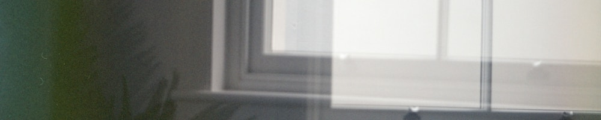

2026年8月の月報です。
仕事、仕事、仕事、仕事！ ひとことで言えばそんな月でした。
まず、公式サイトのデザインをリニューアルしました。丸ごと、WordPress風というのかな、ブログ風。でも、ページを開いたときに「この人は物書きなんだな」というのが先ずわかるように。そして、何よりも気にしていた、スマートフォンからの表示の直し！ 今まではスマートフォンからのアクセスを想定していない造りを見本にしていたので（阿部寛さんのホームページを参考に作っていました！）、そこからスマホ対応に展開していくのが難しくて。だからいっそのこと変えてしまえ、と思って、すべてデザインを一新しました。どうかな…… わたし個人的には、とても満足してます！
それ以外にも、いろいろと仕事をしていました。『不完全な三角形』、執筆を進めています！ いま本文の半分くらいを書き終えて、表紙の制作にも取り掛かり始めました。まだまだプロトタイプを作っている段階ではありますが…… 今回は本を作って販売する以外にもさまざまな仕掛けを考えていまして、それらが実行できたらいいなあと思いつつ、ばりばりやっております。
それから、夏休みも取りました。取ったのですが、その直後に「２４時間裁縫チャレンジ」という途方もないチャレンジを行なってしまい（笑）、休めた感触はそんなにない……かもな。２４時間裁縫チャレンジといっても、寝ずにやるのではなくて、数日間のうち合計２４時間裁縫ができるようにチャレンジしていく、というものです。これの風景をあらわしたものがですね、新刊『不完全な三角形』に載る予定です！ よっしゃ～！ すごく楽しく書けたので、ぜひ皆さんにお手に取ってもらいたいです。お手に取ってもらえるよう、がんばります。
夏休みの話をしていたのに、いつの間にか仕事の話になっていますね。そういう感じの生き方なんです、ずっと。
さらに、さらに。公式Instagramを開設しました～！！@tamuramanatsu、ぜひご覧ください。はじめてのInstagramリールを作ったり、日英併記で投稿したり、頑張っております。個人的には選曲がポイントです。流行っている曲じゃなくて、自分が本当に聴いていて好きな曲を入れているよ。「音楽を聴くのが好き」というのはわたしのアイデンティティのうちのひとつになると思うのだけど、あまり文章を書く場では出してこなかったように思うので、Instagramみたいな場でちょっとずつ出していけると楽しくなりそうですね。ぜひチェックとフォロー、よろしくお願いします。
Instagramでこのリールを見る
▲ ２４時間裁縫チャレンジで縫ったスポーツショーツをリールにしました。これがはじめてのリール投稿です。頑張った～！
プライベートでは、５,６年ぶり……？ に婦人科に行って子宮頸がん検診を受けたり、月経困難症と診断されて、月経消失薬（！）を飲むことになったり、これもまた後々書きたいことができそうだなぁ！ という変化が盛りだくさんです。たくさん動いたな、今年の夏。
作ったものはこんな感じです。
そうそう、自作トルソーもかなり楽しかった制作で……！ これもどこかにまとめたり、リールを作ったりしたいなと思っているところです。
やりたいことは尽きない。なんてありがたい生活なんでしょうね。
最近は月報ばかりの更新になっていて、コラム自体をあまり更新できていないのですけれど、『不完全な三角形』の執筆が終わればちょびっとずつ出せるものも出てくると思います。楽しみだな。楽しみにしておいてくれると、とてもうれしいです！
みなさんも次の一か月、身体に気を付けて、楽しんでお過ごしください。
それじゃあね。